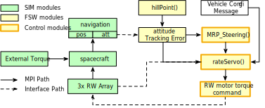
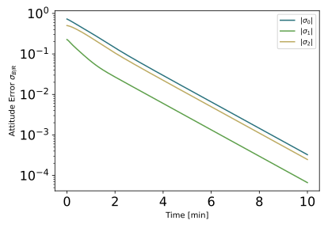
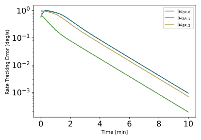
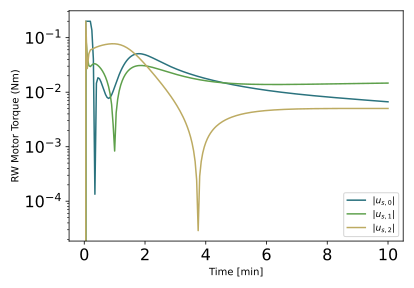
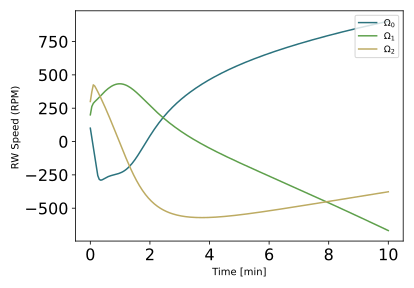
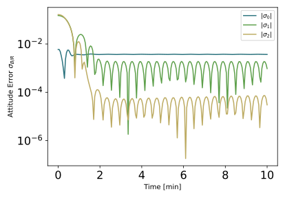
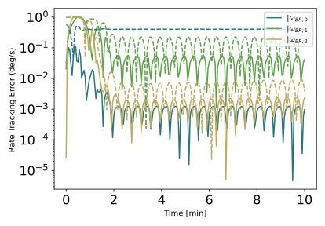
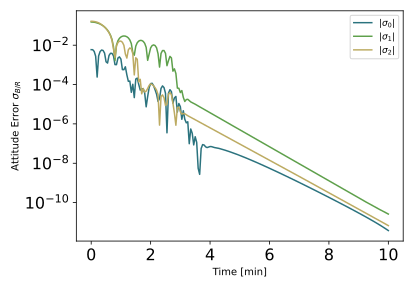

scenarioAttitudeSteering¶
Overview¶
Demonstrates how to use the Module: mrpSteering module to stabilize the attiude relative to the Hill Frame. Details on the math of this module can be found in this paper. This script sets up a spacecraft with 3 RWs which is orbiting the Earth. The goal is to illustrate how to use the Module: mrpSteering module with a rate sub-servo system to control the attitude.
The script is found in the folder basilisk/examples and executed by using:
python3 scenarioAttitudeSteering.py
The simulation layout is shown in the following illustration. A single simulation process is created which contains both the spacecraft simulation modules, as well as the Flight Software (FSW) algorithm modules.
The spacecraft is equipped with three RW, just as in the scenarioAttitudeFeedbackRW tutorial. The Module: hillPoint guidance module is used to align the body frame \(\cal B\) to the Hill frame \(\cal H\). The Module: rateServoFullNonlinear module is used to create the rate tracking sub-servo system. How to setup the Hill frame guidance module is discussed in scenarioAttitudeGuidance.
When the simulation completes several plots are shown for the MRP attitude history, the rate tracking errors, as well as the RW motor torque components, as well as the RW wheel speeds.
Illustration of Simulation Results¶
The following images illustrate the expected simulation run returns for a range of script configurations.
show_plots = True, simCase = 0
Here an unknown external torque is applied, but the integral feedback term is included as well. Note that in the RW motor torque plot both the required control torque \(\hat u_B\) and the true motor torque \(u_B\) are shown. This illustrates that with this maneuver the RW devices are being saturated, and the attitude still eventually stabilizes.
In this simulation setup the integral feedback term is included, and the unknown external torque is automatically compensated for to yield exponential convergence. This convergence is despite having to track a time-varying Hill frame on an elliptic orbit. This illustrates that all the orbital motion is propoerly feed-forward compensated.
show_plots = True, simCase = 1
show_plots = True, simCase = 2
This setup investigates the small depature motion stability about the Hill frame. Here only small initial attitude and rate errors are introduced. However, the outer loop feedback gain \(K_1\) is increased such that it violates the sub-servo loop separation principle.
Here the local motion is now unstable, as predicted in this conference paper.
show_plots = True, simCase = 3
This setup also investigates the small departure motion stability about the Hill frame. However, in this case the feedword term \(\omega'_{\cal B^\ast/R}\) is omitted, which is predicted to yield locally stabilizing control similar in performance to a standard proportional-derivative or PD feedback control.
- scenarioAttitudeSteering.plot_attitude_error(timeData, dataSigmaBR)[source]¶
Plot the attitude error.
- scenarioAttitudeSteering.plot_rate_error(timeData, dataOmegaBR, dataOmegaBRAst)[source]¶
Plot the body angular velocity tracking errors
- scenarioAttitudeSteering.plot_rw_cmd_torque(timeData, dataUsReq, numRW)[source]¶
plot the commanded RW torque.
- scenarioAttitudeSteering.plot_rw_motor_torque(timeData, dataRW, numRW)[source]¶
Plot the actual RW motor torque.
- scenarioAttitudeSteering.run(show_plots, simCase)[source]¶
At the end of the python script you can specify the following example parameters.
- Parameters
show_plots (bool) – Determines if the script should display plots
simCase (int) –
simCase
Definition
0
Detumble with balanced gains (for inner- and outer-loop separation principle), including integral feedback
1
Detumble with balanced gains (for inner- and outer-loop separation principle), without integral feedback
2
Small detumble with strong steering gain violating separation principle, with \(\omega'_{\cal B^{\ast}/R}\)
3
Small detumble with strong steering gain violating separation principle, without \(\omega'_{\cal B^{\ast}/R}\)
The first case has a scenario that should exponentially converge to zero, while the 2nd case will only provide a bounded (or Lagrange stable) response. The latter two scenarios illustrate the performance if the outer loop feedback gain is too strong, violating the sub-servo separation principle, and how removing a particular term in case 3 can still lead to a locally stable response.